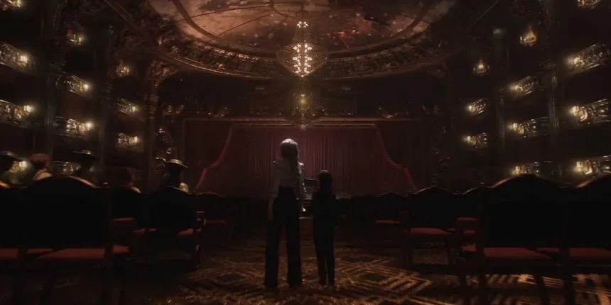
O CAMINHO DE MAELLE
Escolher permanecer.
Continuar vivendo na pintura, ao lado de uma versão de Verso, sem enfrentar verdadeiramente a perda.
Quero mostrar os jogos que mais me marcaram. Não para tentar convencer vocês a jogar, mas porque quero que entendam como vejo cada um deles, com tanto carinho.
Quatro jogos. Quatro experiências. Cada um deles deixou alguma coisa comigo.
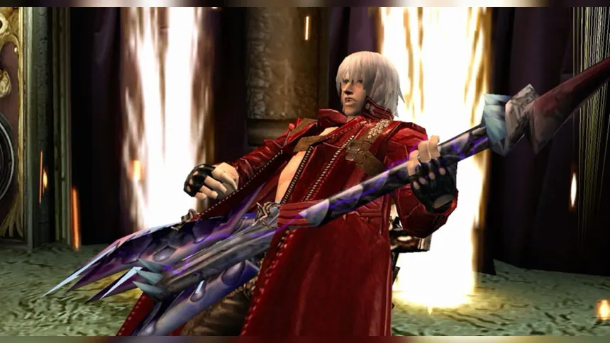
DMC3 não tem medo de ser esquisito. Dante e os outros personagens são completamente malucos, extravagantes e exagerados. E é justamente isso que torna tudo tão incrível.
O gótico e o rock parecem ter nascido para se encontrar nesse universo. A arquitetura sombria, os demônios, as roupas extravagantes e toda aquela atmosfera combinam de um jeito que parece natural.

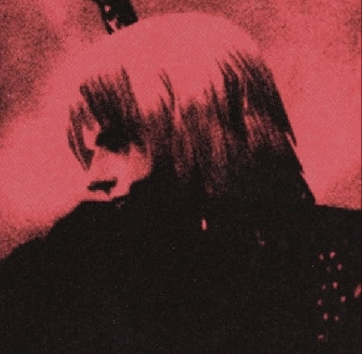
Um mundo sombrio que nunca perde sua atitude.
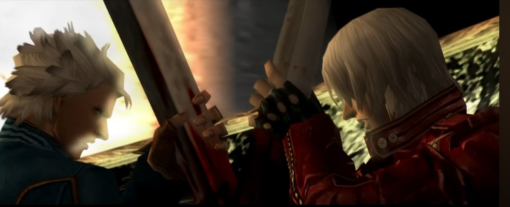
Mas, quando penso em DMC3, existe uma lembrança que sempre volta primeiro: Dante e Vergil. O confronto, a rivalidade e todas aquelas tentativas de vencer o Vergil... É uma das partes mais memoráveis que guardo desse jogo.
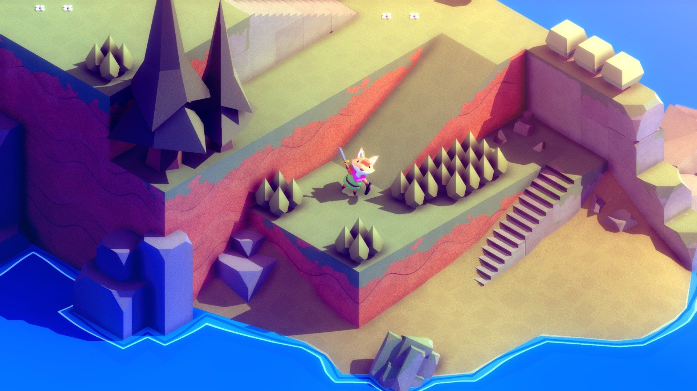
Você acorda em uma praia. Não sabe onde está, o que aconteceu ou para onde deveria ir. Tudo parece esconder alguma coisa. E, desde o primeiro momento, a vontade de descobrir o que existe naquele mundo fala mais alto.
Depois de explorar um pouco, você encontra um manual. Finalmente, algo que pode ajudar a entender aquele mundo! Talvez agora algumas respostas comecem a aparecer.
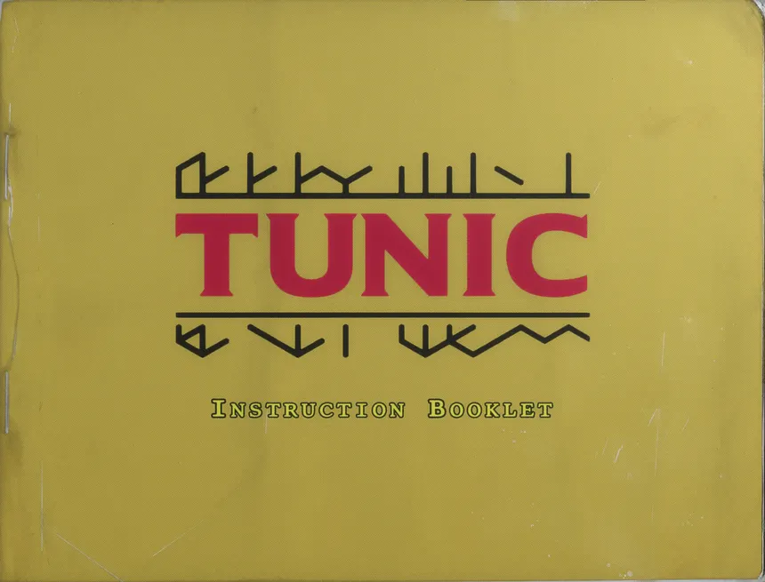

O manual está incompleto. Suas páginas estão espalhadas pelo mundo, e encontrá-las passa a fazer parte da aventura. Mas, ao folhear aquelas páginas, você percebe que existe um problema ainda maior...
Todo aquele conhecimento está ali, diante de você. O manual guarda informações, segredos e partes importantes daquele universo. Só existe um detalhe: tudo está escrito em uma língua fictícia.

E aprender a interpretar aquela escrita não é apenas um detalhe ou uma curiosidade. É parte fundamental da jornada.
Para mim, uma das coisas mais fascinantes do jogo é essa sensação de estar sempre descobrindo algo novo. Você começa sem entender nada, encontra um manual e descobre que precisa aprender a própria língua daquele mundo para compreender seus segredos.
É essa vontade constante de descobrir, entender e finalmente conectar as peças que torna esse universo tão cativante para mim.
Um universo marcado pelo Gommage, onde a cada ciclo a Pintora escolhe quem deixará de existir.
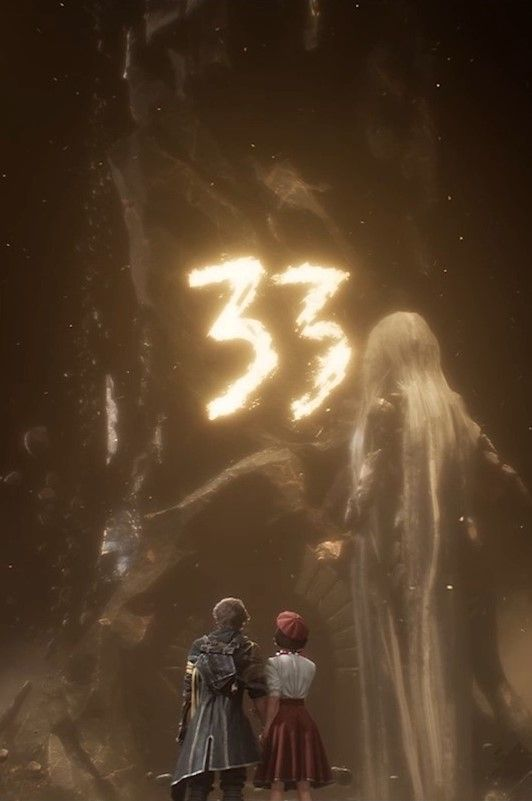
Personagens marcantes, mistérios e descobertas que mudam completamente nossa percepção daquele mundo.
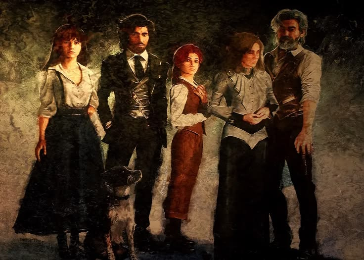
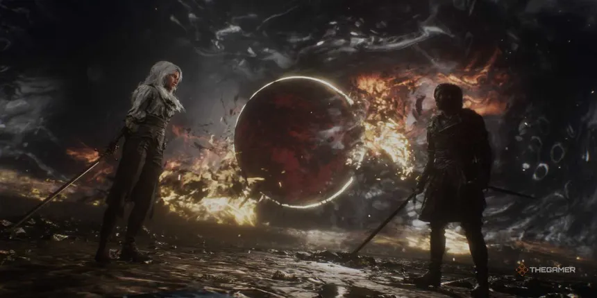
Por trás daquele universo, existe uma família tentando lidar com a perda de Verso.
Maelle deseja permanecer. Verso acredita que é hora de seguir em frente.

Continuar vivendo na pintura, ao lado de uma versão de Verso, sem enfrentar verdadeiramente a perda.
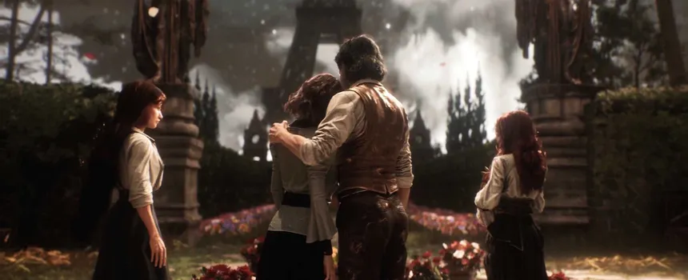
Aceitar a partida de Verso, mesmo com toda a dor, e continuar juntos como uma família.
Por mais doloroso que seja, acredito que precisamos aprender a aceitar a perda para continuar vivendo.
Conheci Rainbow Six em 2015, quando ainda era muito novo. O que começou como diversão acabou se tornando parte da minha vida.
Em 2020, completei 18 anos e finalmente pude começar a buscar um sonho que já tinha há muito tempo: me tornar jogador profissional.
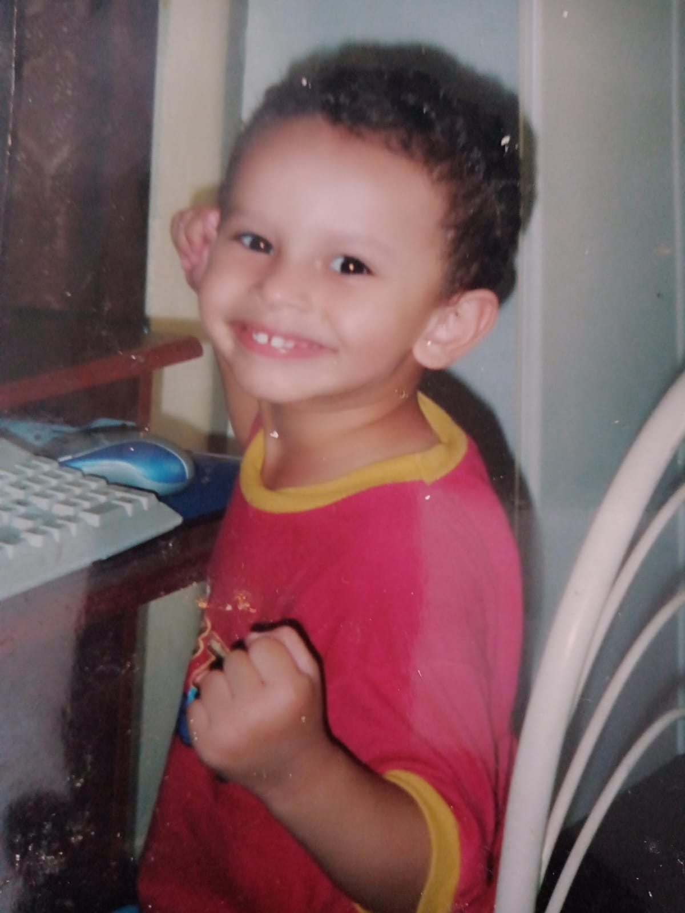
Me tornei jogador profissional, participei de campeonatos importantes e morei com diferentes equipes.
Conheci pessoas que levaria para a vida toda e vivi experiências que jamais imaginei quando comecei. Até tive a oportunidade de acompanhar o Six Invitational no Brasil ao lado dos meus amigos.
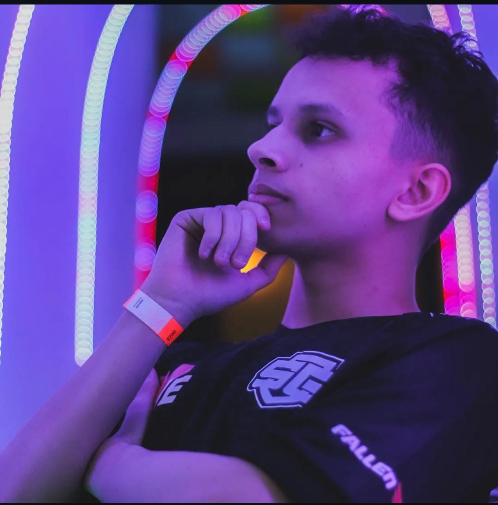
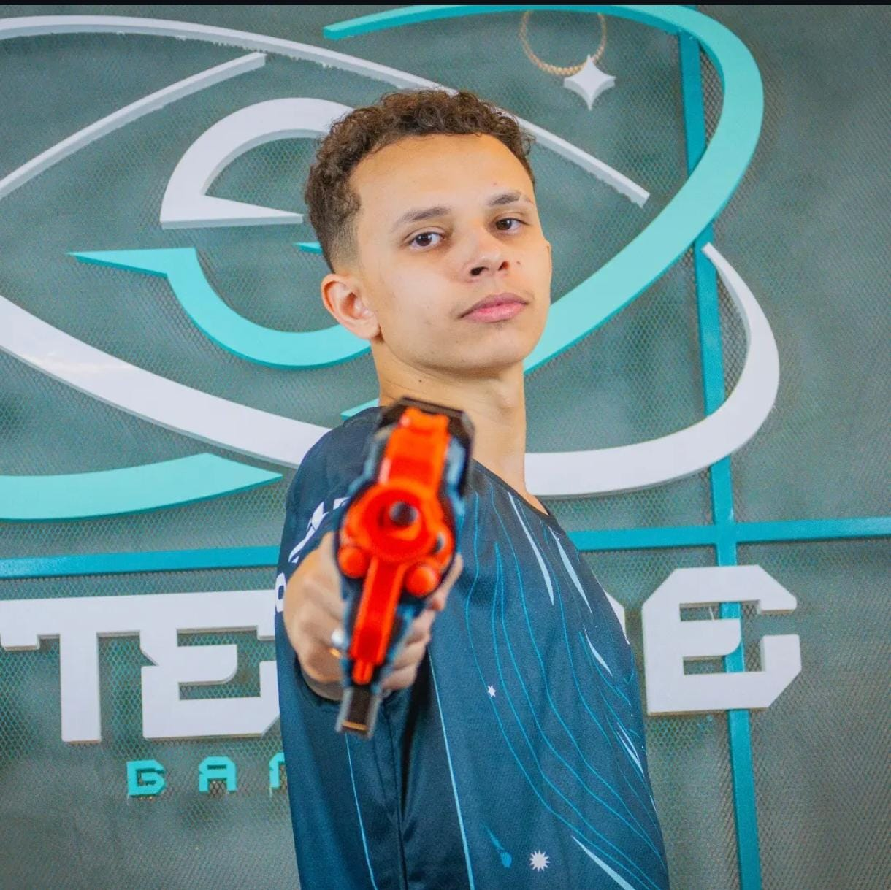
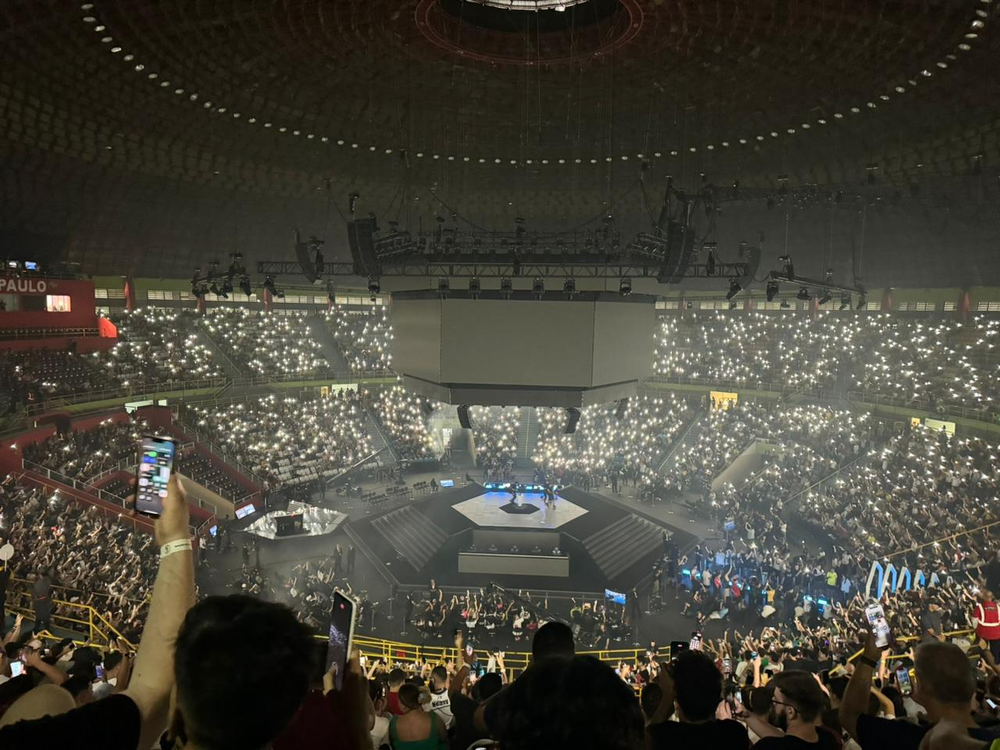
Com o tempo, a rotina competitiva começou a pesar. O que antes era diversão se tornou um trabalho desgastante, acompanhado de cobranças e estresse constantes.
Percebi que precisava seguir outro caminho. Não porque deixei de gostar do jogo, mas porque aquela vida já não me fazia bem.
Amigos que conheci nessa trajetória e que continuam comigo até hoje.
Rainbow Six foi diversão, sonho, trabalho e amadurecimento. Mas, acima de tudo, foi responsável por algumas das amizades mais importantes da minha vida.
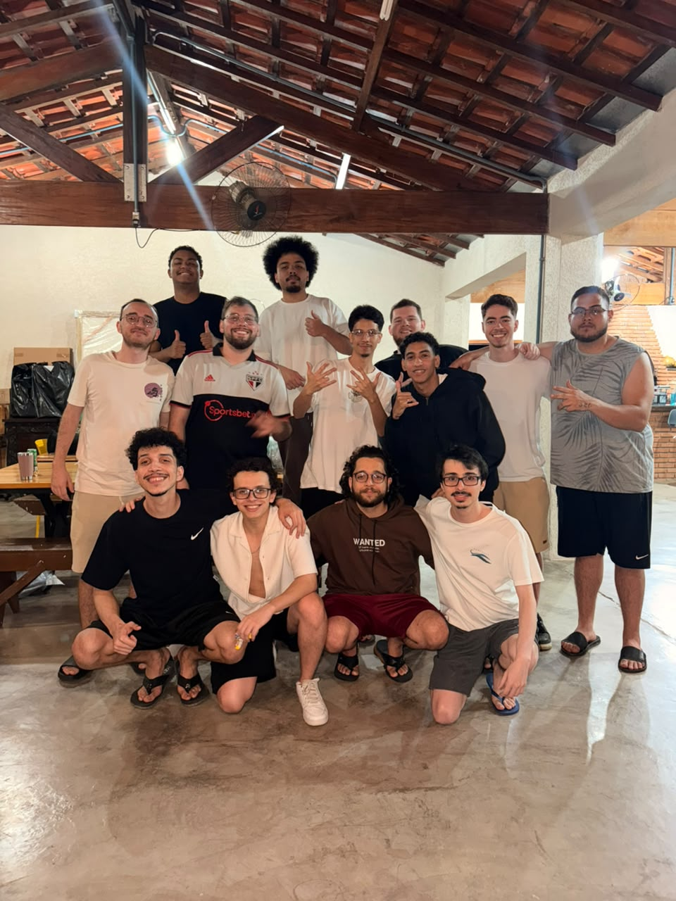
Cada pessoa encontra nos videogames algo diferente. Alguns procuram desafios, outros histórias, descobertas ou simplesmente um momento de diversão.
Queremos descobrir o que faz parte da sua experiência como jogador. Responda ao nosso quiz e conheça seu estilo.
5 PERGUNTAS · 6 ESTILOS · UMA EXPERIÊNCIA SUA